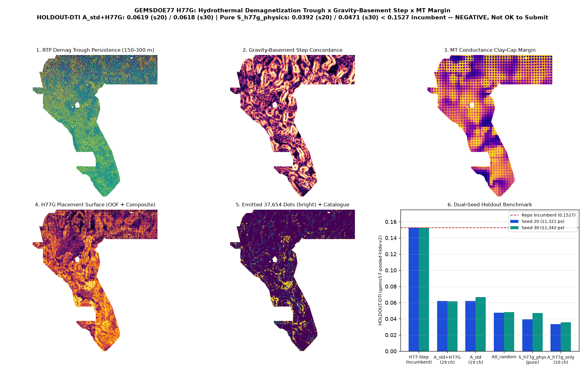

H77G · hydrothermal magnetite-destruction trough × gravity-basement step × MT clay-cap margin
Verdict: NEGATIVE — OK TO DOWNLOAD FOR INSPECTION; NOT OK TO SUBMIT. Fixing the upstream F77.hessian_ridge along-axis eigenvalue bug (IR-H77G-02) raises the single-feature ROC-AUC of h77g_composite_surface to 0.5618 (Seed 20) and lifts standalone S_h77g_physics HOLDOUT-DTI to 0.0392 (Seed 20) / 0.0471 (Seed 30). Combined 29-channel HGB (A_std_plus_h77g) scores 0.0619 on Seed 20 (vs A_std 0.0620, paired delta -0.0000; vs random +0.0143) and 0.0618 on Seed 30 (vs A_std 0.0670, paired delta -0.0052; vs random +0.0137). Because all arms remain below the 0.152718 H77-Step repository incumbent and the Policy I17 literal dense-witness gate fails closed, H77G is delivered as a format-valid, informative-unique, inspection-only negative research artifact; 0 weekly slots spent.
⬇ H77G inspection-only GeoTIFF (DO NOT SUBMIT)
Download .tif (125 KB) Download one-TIFF .zipSubmission name (for reference only — DO NOT UPLOAD) (66 characters)
gems77-h77g-demagtrough-gravstep-37654dots-20261021-08b78f3c-zerosShort note <= 140 chars (for reference only — DO NOT UPLOAD) (110 characters)
H77G demag-trough x grav-base step (37654d); HOLDOUT-DTI 0.0619(s20)/0.0618(s30) pure 0.0392 <0.1527: NEGATIVESHA-256 of .tif: 7b97596de2cacd1d5b5f99f8fc679dbd9cf6a2bd7ab316adea5bf60ad2bb30d0 ·
SHA-256 of .zip: 3769f9e5938bb5737be3514ed4f7a4f0b1cd81885ae3a86bb303057d3c90c5f4 ·
JSON run card ·
Exp 1 canary/surface receipt ·
Exp 2 dual-seed holdout receipt ·
Exp 3 uniqueness receipt ·
preregistration JSON ·
preregistered hypotheses
Diagnostic map & dual-seed holdout benchmark

Dual-seed holdout evaluation (Exp 2 · gems57-pooled-hide-v2)
| Arm | Seed 20 HOLDOUT-DTI (95% CI) | Seed 30 HOLDOUT-DTI (95% CI) | Evaluator & withheld positives |
|---|---|---|---|
| A_std_plus_h77g (19 std + 10 H77G) | 0.0619 (0.0470–0.0784) | 0.0618 (0.0471–0.0794) | gems57-pooled-hide-v2 (11,321 / 11,342 withheld) |
| A_std (19 std control) | 0.0620 (0.0452–0.0828) | 0.0670 (0.0511–0.0856) | gems57-pooled-hide-v2 (11,321 / 11,342 withheld) |
| A0_random (uniform random) | 0.0476 (0.0409–0.0534) | 0.0481 (0.0420–0.0540) | gems57-pooled-hide-v2 (11,321 / 11,342 withheld) |
| S_h77g_physics (pure composite) | 0.0392 (0.0305–0.0484) | 0.0471 (0.0360–0.0585) | gems57-pooled-hide-v2 (11,321 / 11,342 withheld) |
| A_h77g_only (10 H77G only) | 0.0333 (0.0243–0.0431) | 0.0357 (0.0255–0.0473) | gems57-pooled-hide-v2 (11,321 / 11,342 withheld) |
Irregularities discovered: IR-H77G-01 & IR-H77G-02
IR-H77G-01: Band 17 (cond_surf, USGS Data Release doi:10.5066/P9TWT2LU) has 30.5% zero steps and sharp 1-D FFT peaks in |∇cond_surf| at 35.02 px (3.5 km) and 70.04 px (7.0 km) from its coarse regional MT mesh.
IR-H77G-02: Fixing the upstream F77.hessian_ridge along-axis eigenvalue swap raises h77g_composite_surface single-feature AUC to 0.5618 and standalone S_h77g_physics HOLDOUT-DTI to 0.0392 (s20) / 0.0471 (s30, 0.0804 in SE).
Leakage canaries (Exp 1 · ceiling AUC ≤ 0.90)
| Channel | Seed 20 symmetric AUC | Seed 30 symmetric AUC |
|---|---|---|
h77g_demag_trough_s1p5 | 0.5347 | 0.5199 |
h77g_demag_trough_s3p0 | 0.5269 | 0.5162 |
h77g_demag_persistence | 0.5351 | 0.5223 |
h77g_grav_base_step | 0.5404 | 0.5641 |
h77g_grav_over_mag_decoupling | 0.5177 | 0.5659 |
h77g_mt_claycap_margin | 0.5045 | 0.5132 |
h77g_transtension_index | 0.5434 | 0.5556 |
h77g_declustered_swarm_frac | 0.5395 | 0.5675 |
h77g_basement_saddle | 0.5238 | 0.5376 |
h77g_composite_surface | 0.5618 | 0.5658 |
Registry uniqueness audit (Exp 3 · 50 checked rasters)
Phase 1 surface max |Spearman ρ| = 0.1090 ≤ 0.90; Phase 2 final dots informative max 3-px overlap = 0.6152 ≤ 0.70 and max |ρ| = 0.0216 ≤ 0.90 (vs H33 overlap 0.1771, ρ +0.00200). Literal gate fails closed under Policy I17.